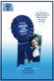
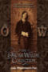
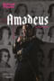

OBRAS DE TEATRO
THEATRE PLAYS
THEATRE PLAYS
| Portada Cover |
Titulo Title |
Año Year |
Idioma Language |
Formato Format |
Resolución Resolution |
Elenco Cast |
Escritor Playwright |
Notas Notes |
|---|---|---|---|---|---|---|---|---|
| Abigail's Party | 1977 | EN | mp4 | 480p | Alison Steadman, Tim Stern, Janine Duvitski, John Salthouse, Harriet Reynolds | Mike Leigh | ||
| An Act Of God | 2015 | EN | mp4 | 480p | Jim Parsons | David Javerbaum | Bootleg video | |
| An Act Of God | 2016 | EN | mp4 | 480p | Sean Hayes | David Javerbaum | Bootleg video | |
|  | Anyone for Denis? | 1982 | EN | mp4 | 576p | Angela Thorne, John Wells | John Wells | |
| Arsenic & Old Lace | 1962 | EN | mp4 | 480p | Tony Randall, Boris Karloff, Dorothy Stickney, Mildred Natwick, Tom Bosley, George Voskovec, Farrell Pelly, Dort Clark, Nathaniel Frey, Dodie Heath, Alan MacAteer, Ralph Dunn, Edward F. Cullen | Joseph Kesselring | ||
| Arsenic and Old Lace | 1969 | EN | mp4 | 480p | Bob Crane, Sue Lyon, Lillian Gish, Helen Hayes, Fred Gwynne, David Wayne, Jack Gilford, Billy De Wolfe, Richard Deacon, Bob Dishy | Joseph Kesselring | ||
| Blithe Spirit | 1956 | EN | mp4 | 480p | Noël Coward, Lauren Bacall, Claudette Colbert, Mildred Natwick, Brenda Forbes, Marion Ross, Philip Tonge | Noël Coward | ||
| Blithe Spirit | 1966 | EN | mp4 | 480p | Dirk Bogarde, Rosemary Harris, Rachel Roberts, Ruth Gordon, Geoffrey Lumb, Mildred Trares, Joan White | Noël Coward | ||
| La Cage aux folles | 2011 | EN | mp4 | 576p | Christian Clavier, Didier Bourdon, Thomas Sagols, Manoëlle Gaillard, Daniel-Jean Colloredo, Thierry Laurion, Héléna Grouchka, Marie-Hélène Lentini, Christian Pereira, Philippe Beglia, Philippe Gruz, Jean-Marc Coudert | Jean Poiret | ||
| Beautiful Thing | 2013 | EN | mp4 | 720p | Jake Davies, Danny-Boy Hatchard, Suranne Jones, Zaraah Abrahams, Oliver Farnworth | Jonathan Harvey | ||
| Driving Miss Daisy | 2015 | EN | mp4 | 1080p | Angela Lansbury, James Earl Jones, Boyd Gaines | Alfred Uhry | ||
| An Evening With Miriam Margolyes | 2021 | EN | mp4 | 720p | Miriam Margolyes, Simon Callow | Alfred Uhry | ||
| The Importance of Being Earnest | 1964 | EN | mp4 | 480p | Wilfrid Brambell, Pamela Brown, Ian Carmichael, Fenella Fielding, Irene Handl, Charles Lloyd Pack, Patrick Macnee, Susannah York | Oscar Wilde | ||
| The Importance Of Being Earnest | 1986 | EN | mp4 | 576p | Paul McGann, Rupert Frazer, Joan Plowright, Amanda Redman, Gemma Jones, Alec McCowen, Natalie Ogle, John Woodnutt | Oscar Wilde | ||
| The Importance of Being Earnest | 2011 | EN | mp4 | 480p | Brian Bedford, Santino Fontana, David Furr, Sara Topham, Charlotte Parry | Oscar Wilde | ||
| The Importance of Being Earnest | 2015 | EN | mp4 | 720p | David Suchet, Michael Benz, Philip Cumbus, Imogen Doel, Michele Dotrice, Brendan Hooper, David Killick, Richard O'Callaghan, Emily Barber | Oscar Wilde | ||
| The Importance of Being Earnest | 2018 | EN | mp4 | 1080p | Sophie Thompson, Fiona Button, Jeremy Swift, Fehinti Balogun, Jacob Fortune-Lloyd, Stella Gonet, Pippa Nixon | Oscar Wilde | ||
| The Importance of Being Earnest | 2020 | EN | mp4 | 1080p | Cathy Tyson, Sharan Phull, Edward Franklin, Fela Lufadeju, Angela Clerkin, Dominic Gately, Darren Bennett, Martha Mackintosh | Oscar Wilde | ||
|  | Lady Windermere's Fan | 1985 | EN | mp4 | 576p | Helena Little, Tim Woodward, Kenneth Cranham, Robert Lang, Diana Fairfax, Geoff Morrell, Sarah Kestelman | Oscar Wilde | |
| National Theatre Live: All About Eve | 2011 | EN | mp4 | 720p | Gillian Anderson, Lily James, Monica Dolan, Ian Drysdale, Tsion Habte, Jessie Mei Li, Julian Ovenden, Sheila Reid, Rhashan Stone, Stanley Townsend, Philip Voyzey | Joseph L. Mankiewicz | ||
| National Theatre Live: Allelujah! | 2017 | EN | mp4 | 100p | Sacha Dhawan, Samuel Barnett, Deborah Findlay, Julia Foster, Jacqueline Clarke, Jacqueline Chan, Sam Bond, Peter Forbes, Rosie Ede, Patricia England, David Moorst, Anna Lindup, Louis Mahoney, Nadine Higgin, Nicola Hughes, Richie Hart, Manish Gandhi, Jeff Rawle, Cleo Sylvestre, Gwen Taylor, Sue Wallace, Simon Williams, Duncan Wisbey, Gary Wood, Colin Haigh | Alan Bennett | ||
|  | National Theatre Live: Amadeus | 2017 | EN | mp4 | 100p | Lucian Msamati, Adam Gillen, Karla Crome, Sarah Amankwah, Hammed Animashaun, Tom Edden, Alexandra Mathie, Hugh Sachs, Geoffrey Beevers, Fleur de Bray, Wendy Dawn Thompson, Peter Willcock, Eamonn Mulhall, Andrew MacBean, Everal Walsh, Nicholas Gerard-Martin, Matt Hargreaves, Michael Lyle, Robyn Allegra Parton, Eleanor Sutton | Peter Shaffer | |
| National Theatre Live: Angels In America Part 1 | 2017 | EN | mp4 | 720p | Andrew Garfield, Nathan Lane, Susan Brown, Denise Gough, Amanda Lawrence, James McArdle, Nathan Stewart-Jarrett, Russell Tovey, Stuart Angell, Laura Caldow, Claire Lambert, Becky Namgauds, Stan West, Lewis Wilkins | Tony Kushner | ||
| National Theatre Live: Angels In America Part 2 | 2017 | EN | mp4 | 720p | Andrew Garfield, Nathan Lane, Susan Brown, Denise Gough, Amanda Lawrence, James McArdle, Nathan Stewart-Jarrett, Russell Tovey, Stuart Angell, Laura Caldow, Claire Lambert, Becky Namgauds, Stan West, Lewis Wilkins | Tony Kushner | ||
| National Theatre Live: East Is East | 2017 | EN | mp4 | 720p | Amy-Leigh Hickman, Irvine Iqbal, Tony Jayawardena, Adonis Jeneico, Noah Manzoor, Joeravar Sangha, Gurjeet Singh, Sophie Stanton, Assad Zaman | Ayub Khan Din | ||
 |
National Theatre Live: Frankenstein | 2011 | EN | mp4 | 1080p | Benedict Cumberbatch, Jonny Lee Miller, Ella Smith, Naomie Harris, George Harris, Karl Johnson, Daniel Millar, Lizzie Winkler, Andreea Păduraru, Daniel Ings, Martin Chamberlain | Nick Dear | Johnny Lee Miller as Victor and Benedict Cumberbatch as the Creature |
| National Theatre Live: Frankenstein | 2011 | EN | mp4 | 1080p | Benedict Cumberbatch, Jonny Lee Miller, Ella Smith, Naomie Harris, George Harris, Karl Johnson, Daniel Millar, Lizzie Winkler, Andreea Păduraru, Daniel Ings, Martin Chamberlain | Nick Dear | Benedict Cumberbatch as Victor and Johnny Lee Miller as the Creature | |
| National Theatre Live: Jack Absolute Flies Again | 2010 | EN | mp4 | 1080p | James Corrigan, Laurie Davidson, Kelvin Fletcher, Peter Forbes, Kerry Howard, Jordan Metcalfe, Caroline Quentin, Akshay Sharan, Natalie Simpson, Tim Steed, Helena Wilson | Dion Boucicault | ||
| National Theatre Live: London Assurance | 2010 | EN | mp4 | 1080p | Simon Russell Beale, Mark Addy, Fiona Shaw, Richard Briers, Junix Inocian, Prasanna Puwanarajah, Paul Ready, Matt Cross, Nick Sampson, Richard Frame, Maggie Service, Simon Markey, Michelle Terry | Dion Boucicault | ||
| National Theatre Live: The Audience | 2013 | EN | mp4 | 720p | Helen Mirren, Michael Elwyn, Haydn Gwynne, Richard McCabe, Nathaniel Parker, Paul Ritter, Rufus Wright, Edward Fox, David Peart, Geoffrey Beevers, Nell Williams, Charlotte Moore, Harry Feltham, Matt Plumb, Spencer Kitchen, Elaine Solomon, Jonathan Coote, Ian Houghton | Peter Morgan | ||
| National Theatre Live: The Habit Of Art | 2010 | EN | mp4 | 1080p | Richard Griffiths, Alex Jennings, Frances de la Tour, Stephen Wight, Philip Childs, Elliot Levey, John Heffernan, Barbara Kirby, Martin Chamberlain, Laurence Belcher, Adrian Scarborough, Tom Attwood | Alan Bennett | ||
| National Theatre Live: Under MIlk Wood | 2021 | EN | mp4 | 1080p | Michael Sheen, Karl Johnson, Susan Brown, Ifan Huw Dafydd, Alan David, Gillian Elisa, Michael Elwyn, Kezrena James, Andrew MacBean, Lee Mengo, Anthony O'Donnell, Siân Phillips, Gaynor Morgan Rees, Cleo Sylvestre | Alan Bennett | ||
| Piaf | 1984 | EN | mp4 | 576p | Jane Lapotaire, David Leary, Robert Christian, Peter Friedman, Judith Ivey, Jean Smart | Pam Gems | ||
| The Picture Of Dorian Gray | 1976 | EN | mp4 | 576p | Peter Firth, John Gielgud, Judi Bowker, Jeremy Brett, Nicholas Ball, Gillian Raine, Nicholas Clay, Michael Barrington, Mark Dignam, Gwen Ffrangcon-Davies | Oscar Wilde | ||
| The Picture of Dorian Gray | 2021 | EN | mp4 | 1080p | Fionn Whitehead, Stephen Fry, Alfred Enoch, Joanna Lumley, Emma McDonald, Russell Tovey | Oscar Wilde | ||
 |
Puppetry of the Penis: Live at the Forum | 2001 | EN | mp4 | 576p | Simon Morley, David Friend | Simon Morley, David Friend | |
| Sinderella | 1995 | EN | mp4 | 576p | Jim Davidson, Charlie Drake, Jess Conrad, Dianne Lee, Roger Kitter, Dave Lee, Dave Kristian, Mia Carla | Bryan Blackburn, Jim Davidson | ||
| What the Butler Saw | 1987 | EN | mp4 | 480p | Tyler Butterworth, Dinsdale Landen, Tessa Peake-Jones, Bryan Pringle, Prunella Scales, Timothy West | Joe Orton | ||
| What The Butler Saw | 2020 | EN | mp4 | 1080p | Rufus Hound, Dakota Blue Richards, Catherine Russell, Ravi Aujla, Jasper Britton, Jack Holden | Joe Orton |